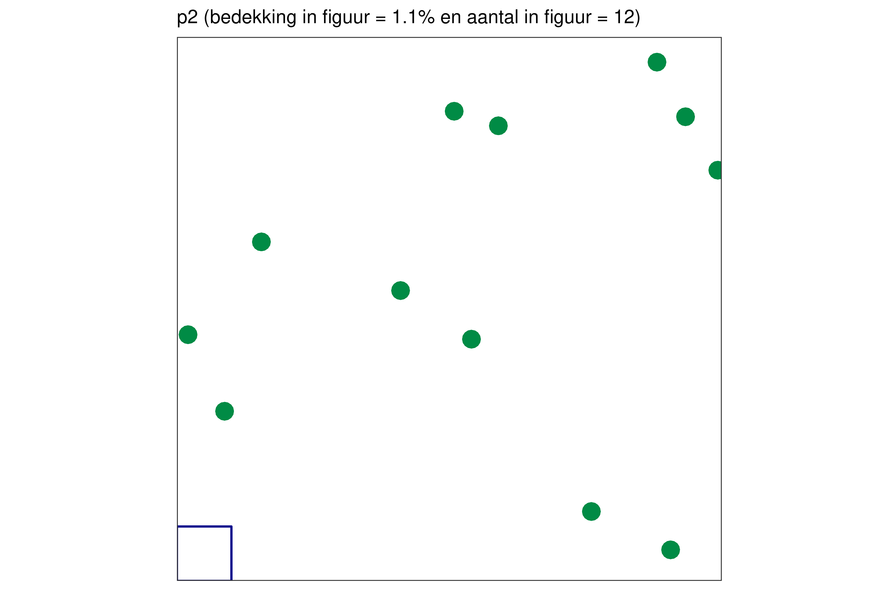

Klassieke vegetatieopname in een proefvlak aan de hand van visuele inschattingen van bedekking van soorten in (semi-)terrestrische vegetatie
Sophie Vermeersch
 0009-0001-5836-1189
0009-0001-5836-1189
Els De Bie
0000-0001-7679-743X
2023-05-03
Metadata
| reviewers | documentbeheerder | protocolcode | versienummer | taal | thema |
|---|---|---|---|---|---|
| Hans Van Calster, Lieve Vriens, Jan Wouters, Wouter Van Gompel, Els Lommelen | Hans Van Calster | sfp-401-nl | 2023.03 | nl | vegetation |
Controleer deze tabel om te zien of een meer recente versie beschikbaar is.
1 Wijzigingen t.o.v. vorige versies
1.1 2023.03
- parametrisatie van het protocol
- overzetting van protocol SVP-401 v1.1 van docx formaat naar html formaat
3 Onderwerp
3.1 Definities en afkortingen
Abundantie of densiteit = een maat voor talrijkheid: abundantie wordt gebruikt om aan te geven hoe talrijk een soort voorkomt, meestal gekoppeld aan een bepaalde oppervlakte (densiteit). Het is het aantal individuen of andere teleenheden (bv. scheuten) van een soort per oppervlakte. Deze term wordt bijvoorbeeld gebruikt in de vegetatiekunde, waar verschillende systemen bestaan om de abundantie van plantensoorten in de vegetatie aan te geven.
Aquatische vegetatie = watergebonden vegetatie (waterplantvegetaties - hydrofyten), al dan niet volledig ondergedoken in de waterkolom.
Bedekking = een maat van voorkomen die meer gelinkt is met biomassa (een soort kan bijvoorbeeld zeer talrijk voorkomen maar met lage biomassa/bedekking): de bedekking van een plantensoort (of laag van de vegetatie, bv. boomlaag) is de proportie van de bodem die bedekt is door een soort, indien alle andere soorten verwijderd zouden worden. M.a.w. het is de verticale projectie van alle bovengrondse plantendelen van alle individuen van een soort op de bodem binnen een proefvlak (Wilson, 2011). De bedekking wordt uitgedrukt als een proportie of een percentage.
Bedekkingsschaal = een meestal ordinale schaal die gebruikt wordt om in het veld voor een plantensoort de visueel ingeschatte bedekking te noteren. Sommige schalen zijn een combinatie van klassen voor bedekkingspercentages en klassen voor abundanties bij lage bedekkingen. Elke klasse in de ordinale schaal krijgt een code die genoteerd wordt.
Proefvlak = deel van het terrein waarbinnen de waarnemingen worden gedaan. Het heeft een vooraf vastgelegde vorm, grootte en oriëntatie. De standaard voor vegetatie-opnamen is een vierkant proefvlak.
PQ = permanent quadraat: een proefvlak dat meermaals in de tijd wordt opgenomen, en dus resulteert in een tijdreeks van opnames voor eenzelfde locatie.
(Semi-)terrestrische vegetatie = Niet-aquatische vegetaties. Zijn aan land gebonden en wortelen in de bodem.
Soortensamenstelling = de lijst van soorten die voorkomen binnen het proefvlak.
Strooisellaag = liggend afgestorven plantenmateriaal op de bodem, niet vasthangend aan de moederplant waarin organisch materiaal nog herkenbaar te vinden is. Strooisel omvat dus bladeren, stengels, twijgen en andere houtachtige plantenresten, zowel intact en herkenbaar materiaal als gedeeltelijk gecomposteerd en gefragmenteerd materiaal.
Vegetatieopname = beschrijving van de vegetatiesamenstelling door middel van een volledige lijst van de aanwezige soorten en de mate van de hoeveelheid waarin ze voorkomen (biomassa, densiteit, bedekking, …).
3.2 Doelstelling en toepassingsgebied
De beschrijving van de vegetatie gebeurt vaak op basis van een zogenaamde vegetatieopname. Vegetatieopnames hebben tot doel een beeld te geven van de vegetatie op een bepaalde locatie aan de hand van de soortensamenstelling, abundantie en bedekking van de soorten binnen een proefvlak. Dit kan zowel met doel een fytosociologie af te lijnen (lokaal, regionaal, …), een verandering in tijd bloot te leggen, als de biotische toestand (kwaliteit, verstoringen,..) te karakteriseren.
De hier beschreven procedure is uitsluitend van toepassing op vegetaties in terrestrische al dan niet grondwaterafhankelijke situaties. De grootte en vorm van het proefvlak kan variëren, afhankelijk van de doelstelling of van het bestudeerde vegetatietype. Zie A voor een overzicht van de in dit protocol gebruikte instelwaarden.
4 Beperkingen van het protocol
Dit protocol is bedoeld voor terrestrische vegetaties in een proefvlak.
Het gebruik van dit protocol buiten het vegetatieseizoen leidt mogelijk tot een onvolledige dataset, en eventueel interpretatiefouten. In dit protocol is aangegeven welke de beste periodes zijn om de vegetatieopnamen uit te voeren (zie Figuur 8.1).
De inschattingen zijn zeker niet vrij van meetfouten. Mogelijke foutenbronnen zijn:
- niet waarnemen van een soort in het proefvlak,
- fout determineren van een soort,
- de abundantie/bedekking fout inschatten.
Het veldprotocol in combinatie met opleidingen moet bijdragen om deze fouten en verschillen in interpretatie tussen veldwerkers (waarnemer-effecten) zo klein mogelijk te maken.
De selectie van locaties valt buiten de context van dit protocol. Dit is afhankelijk van de doelstelling van het project.
5 Principe
Een klassieke vegetatieopname is een opsomming van alle plantensoorten (soortensamenstelling) die op een bepaald tijdstip samen voorkomen binnen een afgebakende plek (proefvlak), samen met een schatting van de abundantie/bedekking per soort en per vegetatielaag. Aangezien het onmogelijk is om elk plantenindividu te tellen wordt het voorkomen per soort ingeschat op basis van een speciaal voor visuele schattingen aangepaste bedekkingsschaal. Wanneer dit proefvlak op regelmatige tijdstippen wordt beschreven spreekt men van een permanent kwadraat of afgekort PQ.
De oorspronkelijke doelstelling van klassieke vegetatieopnamen (rélevé phytosociologique) was meestal data verzamelen om achteraf vegetatietypes (klassen, verbonden, associaties …; cf. syntaxonomie) te kunnen classificeren. De oorspronkelijke Braun-Blanquet methode (Braun-Blanquet, 1964) was enerzijds een schaal om de bedekking te schatten, anderzijds een veldmethodiek. De proefvlaklocaties werden zo gekozen dat ze lagen in een goed ontwikkelde, homogene vegetatie (in termen van het type vegetatie, dus geen randsituaties, geen gradiënten, …). De grootte van het proefvlak werd zo gekozen dat de soortenrijkdom weinig of niet veel meer toenam bij het vergroten van de bekeken oppervlakte (empirisch bepaald aan de hand van soort – oppervlakte accumulatiecurves; = minimal area concept) (Kent & Coper, 1994).
De bedekkingsschalen om visueel bedekkingen in te schatten zijn meestal opgebouwd volgens een geometrische reeks (de afstand tussen opeenvolgende klassen is klein bij lage bedekkingen en wordt groter bij hogere bedekkingen). Het menselijk oog kan immers gemakkelijker verschillen in bedekking onderscheiden bij lage bedekkingen. Een verschil tussen 1% en 2% bedekking is een verdubbeling in oppervlakte en vrij goed te zien, terwijl een verschil tussen 50% en 51% bedekking visueel niet in te schatten is.
6 Vereiste competenties
Een belangrijke vereiste is een gedegen kennis van de voorkomende flora. Hierbij is vooral vertrouwdheid met de veldkenmerken van planten van belang om snel en efficiënt een opname te kunnen maken. Voor sommige moeilijkere soorten of soortengroepen zijn meer klassieke plantmorfologische determinatiekenmerken nodig.
7 Benodigdheden
7.1 Apparatuur
- hand-GPS (nauwkeurigheid +/- 5 m)
- (eventueel) RTK – GPS (nauwkeurigheid ongeveer 5 cm)
- (eventueel) kompas
- (eventueel) digitale camera
- (eventueel) tablet of veldcomputer
- (eventueel) Fieldmap configuratie (GPS, digitaal kompas, veldcomputer)
- reservebatterijen
7.2 Materiaal
- wegenatlas, kaartmateriaal op voorhand voorbereid via GIS
- notaboek of –fiches (zie Bijlage B Veldformulier)
- voldoende schrijfmateriaal
- flora (Lambinon et al., 1998)
- loep (8x, 10x, 15x)
- lint- (min. 5m) of vouwmeter
- 4 markeerstokken + touw (met markering proefvlaklengte en -diagonaal)
- eventueel markeerverf voor in bossystemen
- recipiënten (mapjes, krantenpapier, plastic zakje) om niet gedetermineerde planten te bewaren
- paraplu (om papieren droog te houden)
- (eventueel) materiaal voor permanente markering (bv. Fenopaal)
8 Werkwijze
8.1 Uitvoering
8.1.1 Voorbereiding terreinwerk
De hier opgesomde voorbereidende stappen kunnen sterk afhankelijk zijn van de doelstelling en voorgeschiedenis van het project en van het beschikbare materiaal en apparatuur voor het project.
Kaartmateriaal met te bezoeken locaties wordt voorbereid in een GIS-omgeving. Indien geen veldcomputer/tablet voorhanden, worden de kaarten in kleur geprint, met een duidelijke schaalvermelding. Eventueel worden overzichtskaarten gemaakt zodat de kortste afstand, of de gemakkelijkste weg tot het punt of perceel duidelijk is (bv. brugjes over rivieren, onverharde wegen, …).
Coördinaten worden ingelezen in een GPS (WGS84 !) of in Fieldmap, indien voorhanden. Zo kan er makkelijker genavigeerd worden naar het specifieke punt.
Voor elke locatie is de optimale periode bepaald waarin het veldwerk wordt uitgevoerd.
Voor elke locatie is op voorhand de grootte en vorm van het proefvlak vastgelegd afhankelijk van de doelstellingen van het onderzoek.
Historische vegetatieopnames of soortenlijsten kunnen mee op terrein genomen worden, indien voorhanden. Er is wel per project een afweging nodig van de voor- en nadelen die hieraan verbonden zijn. Aan de hand van oude opnames een globale soortenlijst van het gebied samenstellen is aan te raden om op voorhand vertrouwd te geraken met de soorten.
- Mogelijke voordelen: kan helpen bij herlokalisatie, leereffect, …
- Mogelijke nadelen: overnemen van foute determinaties, onbewuste vertekening door verhoogde zoekinspanning naar ontbrekende soorten of door bijstellen van de bedekking, …
Print voldoende veldformulieren (+ enkele extra) af, per proefvlak minstens 1 veldformulier.
Ga na of alle benodigdheden aanwezig zijn en functioneren (checklist, zie hoofdstuk 7).
Zorg indien mogelijk dat je de toestemming hebt om de percelen te betreden.
8.1.2 Keuze periode
Het is belangrijk het tijdstip optimaal te kiezen in functie van het groeiseizoen van de meest voorkomende planten (zie Figuur 8.1). Afhankelijk van het vegetatietype of de opzet van het project kunnen twee bezoeken binnen eenzelfde vegetatieseizoen noodzakelijk zijn. Dit doordat er twee in de tijd gescheiden coherente bloeiperioden van planten zijn. Een duidelijk voorbeeld is de voorjaarsflora in bossen. Deze kan enkel in de maanden maart – april worden opgenomen, op het moment dat deze flora optimaal zichtbaar is. De andere ondergroei zal pas later op het jaar zijn maximum bereiken (periode juli-augustus). Deze twee opnames op eenzelfde locatie maar ander tijdstip in het seizoen worden gezien als twee aparte opnames. Voor analyse achteraf, kunnen deze worden samengevoegd met per soort het maximum van beide ingeschatte bedekkingen.
Figuur 8.1: Monitoringsperiode naargelang biotoopgroep (Vriens et al., 2011)
Bij een maaibeheer is het belangrijk om een vegetatieopname uit te voeren voordat er gemaaid is. Na het maaien is het moeilijk om de soortensamenstelling en bedekking van de vegetatie correct in te schatten.
8.1.3 Grootte en vorm van het proefvlak
De vorm en grootte van het proefvlak is afhankelijk van het vegetatietype en/of het project waarin de opnamen kaderen. We raden nadrukkelijk aan om de standaardwaarden te gebruiken en hier enkel van af te wijken om gemotiveerde redenen.
Voor niet-bosvegetatie is binnen INBO de standaard 3 m x 3 m proefvlak. Voor bossen gaat het om 16 m x 16 m. Voor de onderbouwing van deze keuze van proefvlakgrootte zie Westra et al. (2014), § 4.1.3.3. Er kan afgeweken worden van zowel grootte als vorm met een duidelijke motivatie van de reden. Bijvoorbeeld, voor slenken in natte heides kan dit gereduceerd worden naar een oppervlak van 1 m² waarbij afgeweken wordt van het vierkant door het lineaire karakter van het vegetatietype.
8.1.5 Uitzetten van het proefvlak
Er dient altijd zoveel mogelijk vermeden te worden om door het proefvlak te lopen. Als 1 hoekpunt gekend of vastgelegd is, wordt hier een markeerstok in de grond gestoken. Via een vaste oriëntatie (steeds N-Z) wordt het proefvlak uitgezet.
Een heel snelle manier om proefvlakken (bv voor een 3 m x 3 m proefvlak) uit te zetten is door gebruik te maken van een touw van 6 m, aan de uiteinden voorzien van een lus. Op het touw brengt men twee merktekens aan: de diameter van een vierkant van 3 m x 3 m (= 4.24 m) en een teken op 3 m (= een zijde van het proefvlak). Men plaatst vervolgens een stokje (1 in figuur 8.2) en hangt het uiteinde van het touw over dat stokje. Het tweede stokje plaatst men ter hoogte van de aangeduide diameter (touw dus wel opspannen, 2 in Figuur 8.2). Hier maak je het andere uiteinde van het touw vast. Vervolgens hoeft men enkel nog het touw op te spannen op het 3 m-punt (3 of 4 in Figuur 8.2) en de helft van het proefvlak is al in orde. Best is om ook twee zulke touwen mee te nemen. Dit kan uiteraard ook met een lintmeter. Voor de N-Z oriëntatie is het belangrijk om de 2de markeerstok in NW richting (2) te plaatsen met behulp van een kompas. Zie figuur 8.2 voor meer verduidelijking.
Figuur 8.2: Voorbeeld van het schema voor het uitzetten van een 3 m x 3 m proefvlak
Voor grotere proefvlakken met hoge vegetatie (bv. in bos 16 m x 16 m) is bovenstaande werkwijze niet praktisch. Daar gebruikt men best kompas, lintmeter vertex, of andere apparatuur om afstand of hoeken te bepalen (bv. een laser afstandsmeter).
8.1.6 Foto (optioneel)
De standaard die gehanteerd wordt is om 2 foto’s per proefvlak te nemen: 1 overzichtsfoto van het perceel en 1 foto van het proefvlak zelf. Dit steeds vanuit het zuiden naar het noorden volgens een zichtas door het centrum van het proefvlak (vermijden van tegenlicht). Voor bossen is dit minder evident omwille van mogelijke zichtobstructie door bomen en wordt de beste locatie voor de foto gekozen. In dit laatste geval wordt de azimut (hoek t.o.v. het noorden over het oosten) bij benadering aangegeven van waaruit de foto genomen werd.
Om problemen te vermijden bij de latere verwerking wordt aangeraden om op de foto een duidelijk zichtbare identificatiecode van het proefvlak en oriëntatie weer te geven (Figuur 8.3). We raden aan om op een tabletje deze gegevens te noteren en mee te fotograferen. Het is ook mogelijk om het invulformulier mee op de foto te zetten (of als eerste te fotograferen).
Figuur 8.3: Foto met duidelijke identificatiecode van de locatie van de vegetatieopname a.d.h.v. een krijtbordje (foto: Wouter Van Gompel)
Indien dit onmogelijk is, codeer dan duidelijk in het daartoe voorziene veld op het veldformulier of bij afwezigheid daarvan in het vrije veld ‘opmerkingen’. Met de nieuwe smartphones is het trouwens mogelijk om de locatie van de genomen foto te taggen.
Het is belangrijk om achteraf de fotobestanden een gestructureerde naam (bv. identificatiecode_oriëntatie_datum) te geven. Voor opslag en beheer van fotobestanden zal in een latere fase hiervoor een Digital Asset Management-tool beschikbaar komen.
8.1.7 Vegetatieopname
Het tijdstip van de opname is zeer belangrijk. De opname zou moeten gebeuren op het moment dat de meerderheid van de soorten een maximale bedekking heeft bereikt.
8.1.7.1 Structuur
Bij een gelaagde vegetatie wordt de bedekking van de verschillende structuurlagen, zijnde strooisellaag, algenlaag, moslaag, kruidlaag, struiklaag en boomlaag geschat. Voor INBO gelden volgende defaultwaarden:
De moslaag betreft alle terrestrische mossen, inclusief veenmossen.
Open vegetaties De kruidlaag bevat alle niet-houtige kruiden, en alle houtige planten met een hoogte tot maximaal 0.8 m. Kiemplanten en zaailingen van houtige gewassen aanwezig in de kruidlaag worden genoteerd met vermelding kiemplant (k) bij de fenologie. Tot de struiklaag worden in open vegetaties de houtige planten van 0.8 tot 6 m gerekend. De boomlaag bestaat uit houtige planten hoger dan 6 m.
Bossen Voor bossen ligt de opdeling tussen kruid- en struiklaag op 2 m, voor struik- en boomlaag op 8 m.
De totale bedekkingen van strooisellaag, algenlaag, moslaag, kruidlaag, boom- en struiklaag worden afzonderlijk ingeschat met telkens maximaal 100% bedekking. Daarnaast wordt ook de totale bedekking over de lagen heen ingeschat (dit is 100% min de bedekking van onbedekte bodem). De standaard INBO-schaal voor de bedekking (INBO-structuur in INBOVEG) is een rechtstreekse schatting van het percentage in sprongen van 10%, 5% en 1%, waarbij op de uiteinden van de schaal kleinere sprongen genomen worden. Dit resulteert in 0, 1, 2, 3, 4, 5, 10, 15, 20, 30, 40, 50, 60, 70, 80, 85, 90, 95, 96, 97, 98, 99, 100.
Voor de kruidlaag wordt de gemiddelde hoogte (in centimeter) opgenomen. Het gaat hier om een schatting van de vegetatiehoogte. In het proefvlak wordt volgens een rasterpatroon op 10 locaties het hoogste plantendeel gemeten. Dit uitmiddelen geeft de gemiddelde hoogte aangezien de gemiddelde maximale plantenhoogte per rastercel een gemiddelde hoogte voor het volledige proefvlak oplevert.
8.1.7.2 Soortensamenstelling
Alle plantensoorten binnen het proefvlak worden systematisch genoteerd (vaatplanten, mossen, lichenen). Het handigst is hier te beginnen bij de hoogste structuurlaag om dan af te zakken naar de finale moslaag (indien mossen dienen opgenomen te worden). Vaak wordt begonnen met de meest opvallende of talrijkere soorten om dan af te zakken naar de minder opvallende.
Er worden enkel wetenschappelijke soortnamen gebruikt. Deze zijn opgenomen in de INBO-standaardlijst: INBO-Sci 2011 (in het programma INBOVEG), cfr. Lambinon et al. (1998). Het werken met Nederlandse namen laat verwarring toe in bepaalde gevallen, namelijk of het om het genus of de species gaat.
De fenologie wordt ook genoteerd per soort. Een soort met 2 verschillende waarden voor fenologie wordt beschouwd als 2 verschillende soorten in de analyse (bv. Alnus glutinosa – k (kiemplant) of Alnus glutinosa + (dood)). Voor de standaard INBO-defaultwaarden, zie Bijlage: Fenologiecodes INBO.
Blijf niet te lang speuren naar extra soorten. Hou als regel aan dat als je 5 minuten lang geen nieuwe soort meer vindt, de opname volledig is. In totaal ligt het tijdsbestek voor het maken van een opname, voor geroutineerde situaties, tussen een kwartier en een uur.
Maak eerst een lijst van de aanwezige soorten, schat pas bedekkingen als je lijst min of meer volledig is. Voor vegetatieve grassen kan gewerkt worden met enkele steekproeven van een handvol vegetatieve scheuten.
8.1.7.3 Bedekking
Het is belangrijk om niet enkel wortelende planten binnen het proefvlak te bekijken, maar ook deze met een duidelijke bedekking in het proefvlak, bv. overhangende vegetatie met wortels buiten het proefvlak.
Voor de vegetatieopname maken we gebruik van de schaal van Londo origineel (Tabel 8.1).
| Code | Omschrijving | Percentage benedengrens | Percentage bovengrens | Abundantie benedengrens | Abundantie bovengrens |
|---|---|---|---|---|---|
| .1 | 0 | 1 | |||
| .2 | 1 | 3 | |||
| .4 | 3 | 5 | |||
| 1- | 5 | 10 | |||
| 1 | 5 | 15 | |||
| 1+ | 10 | 15 | |||
| 2 | 15 | 25 | |||
| 3 | 25 | 35 | |||
| 4 | 35 | 45 | |||
| 5- | 45 | 50 | |||
| 5 | 45 | 55 | |||
| 5+ | 50 | 55 | |||
| 6 | 55 | 65 | |||
| 7 | 65 | 75 | |||
| 8 | 75 | 85 | |||
| 9 | 85 | 95 | |||
| 10 | 95 | 100 | |||
| a1 | talrijk - ampulis | 0 | 1 | 21 | 100 |
| a2 | talrijk - ampulis | 1 | 3 | 21 | 100 |
| a4 | talrijk - ampulis | 3 | 5 | 21 | 100 |
| m1 | zeer talrijk >100 - multum | 0 | 1 | 100 | |
| m2 | zeer talrijk >100 - multum | 1 | 3 | 100 | |
| m4 | zeer talrijk >100 - multum | 3 | 5 | 100 | |
| p1 | weinig talrijk - paulum | 0 | 1 | 4 | 20 |
| p2 | weinig talrijk - paulum | 1 | 3 | 4 | 20 |
| p4 | weinig talrijk - paulum | 3 | 5 | 4 | 20 |
| r1 | sporadisch - raro | 0 | 1 | 1 | 3 |
| r2 | sporadisch - raro | 1 | 3 | 1 | 3 |
| r4 | sporadisch - raro | 3 | 5 | 1 | 3 |
Er kunnen dus 29 verschillende codes gebruikt worden voor deze schaal.
Voor de soorten met een bedekking lager dan 5% zijn er verdere onderverdelingen op basis van abundantie (tellingen). Soorten met een hoge presentie, maar lage bedekking worden op die manier niet onderschat. We spreken hier van een gecombineerde abundantie-bedekking schaal waarbij abundantie in combinatie met bedekking wordt gebruikt voor de soorten die weinig bedekken. Basisregel daarbij is dat pollen van éénzelfde soort als 1 individu geteld worden. Bij het geclusterd voorkomen van niet-pollenvormende plantensoorten worden echter de individuele exemplaren of scheuten geteld of geschat voor het benaderen van de densiteit. Voor mossen wordt enkel bedekking genoteerd.
Verstoor je proefvlak zo weinig mogelijk vooraleer je een vrij volledige soortenlijst hebt en de bedekkingen hebt ingeschat. Doe vervolgens nog een check met de lijst van voorkomende soorten.
Bij fijnbladige soorten (bv. smalbladige wilgen) heeft men snel de neiging om de bedekking te overschatten omdat het omhullende volume dat de planten innemen groot is ten opzichte van hun bladoppervlakte (ze hebben een lage Leaf Area Index). Een strategie om de bedekking van zulke soorten in te schatten is dan ook de bedekking voor de verticale projectie van de omhullenden te schatten (= kroonprojectie, Figuur 8.4) en deze naar beneden te corrigeren (0 < correctiefactor < 1) voor de ijlheid van het gebladerte. Deze correctiefactor is opnieuw een visuele schatting, maar dan één die éénmalig kan geschat worden en daarna consequent gebruikt.
Figuur 8.4: Kroonprojectie houdt, in tegenstelling tot de definitie van bedekking, geen rekening met ijlheid van het bladerdak.
Maak aan het einde eens de som van bedekkingen ter controle. De totale som van alle bedekkingen is in grasland in regel meer dan 100% en kan oplopen tot 200% en meer (maar dat hoeft niet!).
8.1.8 Permanente markering van het proefvlak
Wanneer het proefvlak in de toekomst niet opnieuw bezocht wordt en er is geen X-/Y-coördinaat voorhanden, wordt het middelpunt van het proefvlak ingelezen met de hand-GPS (liefst een gemiddelde waarde). Indien het noodzakelijk is het punt exact terug te vinden worden 2 hoekpunten ingelezen met de RTK-GPS (de zuid- en noordhoek). In bossen is een positionering met behulp van Fieldmap nauwkeuriger dan met GPS. De positie kan ingelezen worden in Fieldmap door te navigeren met de afstandsmeter en electronisch kompas vanaf een een referentiepunt met gekende coördinaten, zoals bij voorbeeld een kruispunt, of een punt buiten bos of op een open plek, dat wel nauwkeurig kan worden ingemeten met GPS. In permanente proefvlakken kan de boomconfiguratie opgemeten worden, en gebruikt worden om het proefvlak zeer nauwkeurig te lokaliseren (zie eerder).
Naast het inlezen met GPS kan ook een permanente markering worden aangebracht. Dit om te vermijden dat telkens de RTK gebruikt moet worden. Een permanente markering van de proefvlakken kan op verschillende wijze gebeuren (afhankelijk van het budget en de tijdspanne van opvolging). Het goedkoopste is het inkloppen van een houten paal op 1 van de duidelijk beschreven hoekpunten van het proefvlak. Vanuit dit hoekpunt kan dan gemakkelijk het volledige proefvlak worden gereconstrueerd met een kompas. Een duurdere maar met langere levensduur is het ingraven van een metalen staaf, die naderhand met een metaaldetector terug kan gezocht worden. Een andere oplossing is de proefvlakken te markeren met een fenopaal (Figuur 8.5). Indien maaibeheer, fenopalen diep genoeg steken (= maaiveld) door een zode uit te graven, alvorens de fenopaal te plaatsen. Een metaaldetector is nadien wel handig.

Figuur 8.5: Een fenopaal, die gebruikt wordt om de punten te markeren die met GPS werden gepositioneerd (foto: Nathalie Cools (links), Geert Sioen (rechts))
8.2 Registratie en bewaring van resultaten
De resultaten van de vegetatieopnames worden genoteerd op de desbetreffende invulformulieren (zie bijlage B) en worden bewaard in een daarvoor bestemde archiefmap na inscannen. Alle opnames worden later ingegeven in INBOVEG.
De foto’s worden gearchiveerd (in een latere fase zal hiervoor een Digital Asset Management-tool beschikbaar komen) waarbij een link mogelijk is naar een unieke identificatiecode voor de locatie of de vegetatieopname. De naam van de foto wordt “identificatiecode_orientatie_datum”.
9 Kwaliteitszorg
9.1 Voor de campagne
opleiding voor de terreinmedewerkers (soortenkennis, inschatting bedekkingen: zie bijlage D)
nakijken of alle nodige apparatuur en materiaal aanwezig is en functioneert
verzeker je dat je de toelating hebt om het perceel te betreden.
bij moeilijk terug te vinden proefvlakken kun je best net voor het vegetatieseizoen de locatie al terugzoeken (mbv RTK_GPS, metaaldetector, …) en goed markeren (paaltjes). De fenopalen verdwijnen soms onder molshopen, verstuivingen, vegetatie, …
9.2 Tijdens de campagne
minimalisatie van variatie in uitwendige omstandigheden, dus bij opeenvolgende inventarisaties deze best zoveel mogelijk door dezelfde waarnemer laten uitvoeren. De herhaling van opnames in het volgende jaar (of cyclus van jaren) dienen steeds rond dezelfde periode in die jaren te gebeuren. Bv. opnames gemaakt in mei worden ook later best herhaald in de maand mei.
determinatiefouten kunnen opgevangen worden door bij onzekerheden foto’s of -beter nog- , exemplaren te verzamelen (behalve als het om zeldzame soorten gaat) van dit specifieke specimen (mossen in enveloppes). Er wordt dan een tijdelijke naam (indeterminatum_volgnummer) gegeven en de foto of enveloppe wordt gelabeld met de unieke identificatiecode van de vegetatie-opname en de datum.
som van de bedekking van individuele soorten voor een bepaalde structuurlaag moet groter dan of gelijk zijn aan de totale bedekking voor die specifieke structuurlaag, afhankelijk of individuele soorten elkaar overlappen.
9.3 Na de campagne
checken of alle vermelde soorten kunnen voorkomen op die bepaalde standplaatsen, o.a. door af te toetsen met de Floradatabank, waarnemingen.be
invoeren van de opname in InboVeg
inscannen veldnotities/veldformulieren en centraal in projectmap zetten. Een verwijzing (bv. link naar het bestand op google drive) kan als referentie aan de opname in InboVeg worden gekoppeld. Zie voorbeeld (Figuur 9.1):
Figuur 9.1: Printscreen van een referentie in INBOVEG
- Foto’s worden bewaard ((in een latere fase zal hiervoor een Digital Asset Management-tool beschikbaar komen))
10 Veiligheid
Controleer voor het betreden van het terrein of aanwezige grazers geen gevaar kunnen vormen.
Draag aangepast schoeisel, zorg voor beschermende kledij of middelen (tegen irriterende planten, insecten, zon…).
Inventariseer moeilijk begaanbare, moerassige terreinen in duo of zorg minstens dat je een GSM met noodnummers bij hebt.
11 Samenvatting
1 Uitvoering
1.1 Voorbereiding terreinwerk
1.2 Navigeren naar proefvlak (indien locatie op voorhand bepaald)
1.3 Uitzetten van het proefvlak
1.4 Foto (optioneel)
1.5 Vegetatieopname
2 Registratie en bewaring van resultaten
Referenties
A Bijlage: instelwaarden
| naam | waarde |
|---|---|
| breedte proefvlak in open vegetaties in meter | 3 |
| lengte proefvlak in open vegetaties in meter | 3 |
| breedte proefvlak in bosvegetaties in meter | 16 |
| lengte proefvlak in bosvegetaties in meter | 16 |
| vorm proefvlak | vierkant |
| hoogte overgang kruid/struiklaag in open vegetaties in meter | 0.8 |
| hoogte overgang kruidlaag/struiklaag in bosvegetaties in meter | 2 |
| hoogte overgang struik/boomlaag in open vegetaties in meter | 6 |
| hoogte overgang struik/boomlaag in bosvegetaties in meter | 8 |
| soortenlijsten | vaatplanten, mossen, lichenen |
| fenologieschaal | standaard inbo-fenologiecodes |
| bedekkingsschaal voor soorten | Londo origineel |
| bedekkingsschaal voor structuur | inbo-structuur-schaal |
B Bijlage: opnameformulier
Achtergrondinformatie
Grootte van het proefvlak:
Open vegetaties
- 3 m x 3 m
- 1% = 0.3 m x 0.3 m
Bossen
- 16 m x 16 m
- 1% = 1.6 m x 1.6 m
C Bijlage: Andere mogelijke opnameschalen
Tabel C.1 geeft een overzicht van actieve opnameschalen in INBOVEG, die in aanmerking komen voor proefvlak-opnames.
| ListName | codes |
|---|---|
| Barkman (aangepast) | +a, +b, +p, +r, 1a, 1b, 1p, 2a, 2b, 2m, 3a, 3b, 4a, 4b, 5a, 5b |
| Barkman, Doing & Segal | +a, +b, +p, +r, 1a, 1b, 1p, 2a, 2b, 2m, 2p, 3a, 3b, 4a, 4b, 5a, 5b, 5c, r |
| Beheermonitoringsschaal2017 | ZS, ZS2, ZS4, ZS8, ZSR, S, S2, S4, S8, SR, WT, WT2, WT4, WT8, WTR, T, T2, T4, T8, TR, B, B2, B4, B8, BR, KB, KB2, KB4, KB8, KBR, HB, HB2, HB4, HB8, HBR, D, D2, D4, D8, DR |
| Beheermonitoringsschaal2021 | S, WT, T, B, KB, HB, D |
| Beheersmonitoringsscha | Aa, Ab, C, Da, Db, F, O, R, S |
| Braun/Blanquet | r, +, 1, 2, 3, 4, 5 |
| Braun/Blanquet (B,D&S) | r, +, 1, 2m, 2a, 2b, 3, 4, 5 |
| BraunBlanquet (BDS) Nr | 1, 2, 3, 4, 5, 6, 7, 8, 9 |
| BraunBlanquet Numeriek | 1, 2, 3, 4, 5, 6, 7 |
| Londo (1) volledig | .1, .2, .4, 1-, 1, 1+, 2-, 2, 2+, 3-, 3, 3+, 4-, 4, 4+, 5-, 5, 5+, 6-, 6, 6+, 7-, 7, 7+, 8-, 8, 8+, 9-, 9, 9+, 10, a1, a2, a4, m1, m2, m4, p1, p2, p4, r1, r2, r4 |
| Londo (2) verkort | 1, 10, 2, 3, 4, 5, 6, 7, 8, 9, a, m, p, r |
| Monitoringschaal | 1, 2, 3, 4, 5 |
| Pct-1 | 0, 0-x-1, 1, 2, 3, 4, 5, 6, 7, 8, 9, 10, 11, 12, 13, 14, 15, 16, 17, 18, 19, 20, 21, 22, 23, 24, 25, 26, 27, 28, 29, 30, 31, 32, 33, 34, 35, 36, 37, 38, 39, 40, 41, 42, 43, 44, 45, 46, 47, 48, 49, 50, 51, 52, 53, 54, 55, 56, 57, 58, 59, 60, 61, 62, 63, 64, 65, 66, 67, 68, 69, 70, 71, 72, 73, 74, 75, 76, 77, 78, 79, 80, 81, 82, 83, 84, 85, 86, 87, 88, 89, 90, 91, 92, 93, 94, 95, 96, 97, 98, 99, 100 |
| Pct-10 | 0, 10, 20, 30, 40, 50, 60, 70, 80, 90, 100 |
| Pct-5 | 0, 5, 10, 15, 20, 25, 30, 35, 40, 45, 50, 55, 60, 65, 70, 75, 80, 85, 90, 95, 100 |
| Provoost Decimaal | +, 1, 1-, 1+, 2, 3, 4, 5, 6, 7, 8, 9, 10 |
D Bijlage: inschatting bedekkingen oefenen
Elk blauw vierkantje in de linkerbenedenhoek bij elke figuur vertegenwoordigt 1% van de volledige oppervlakte.

E Bijlage: Fenologiecodes INBO
| Code | Verklaring |
|---|---|
| - | n.v.t. |
| + | Dood |
| 0 | niet genoteerd |
| Dis | uitgezaaid (oude bloeistengels nog aanwezig) |
| Fl | Bloeiend |
| Fr | met vruchten |
| K | Kiemplant |
| Kn | Bloemknoppen |
| sp | Sporenvormend |
| V | Vegetatief |
Enkel de codes + (dood) en K (kiemplant) moeten toegevoegd worden indien van toepassing. De andere codes zijn facultatief.